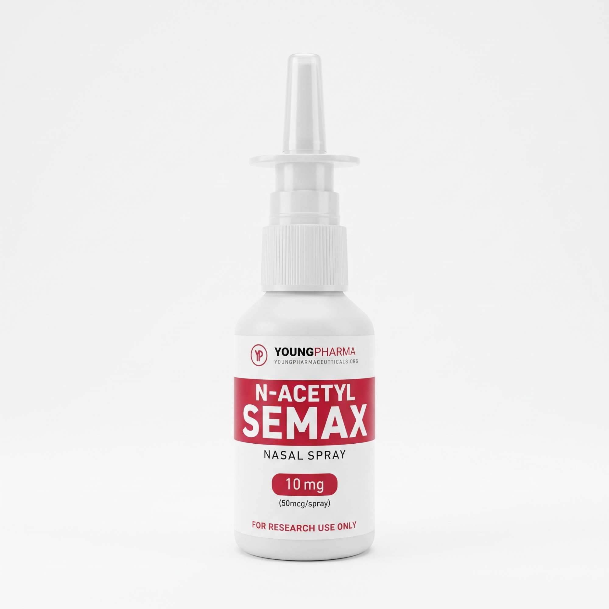
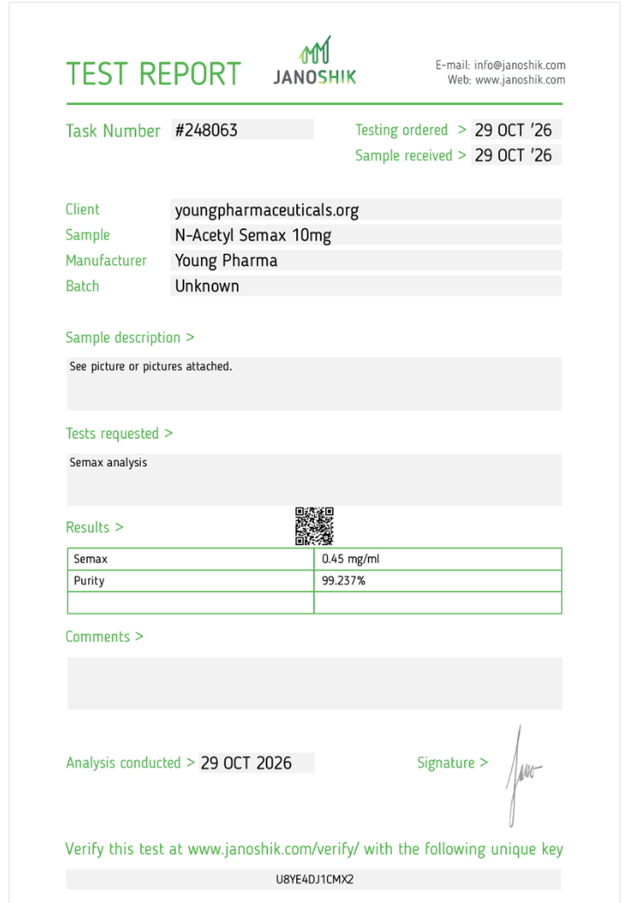

110 hasta·5 ay
BDNF
Semax alan grupta kandaki BDNF yükseldi.


Semax 0,45 mg/ml
Saflık %99,237
Rapor #248063
Parti numarası belirtilmemiştir
Raporu inceleyebilirsin.
N-Acetyl Semax · Yalnızca araştırma amaçlıdır.
Temsili görüntü
Gerçek ürün · Yalnızca araştırma amaçlıdır